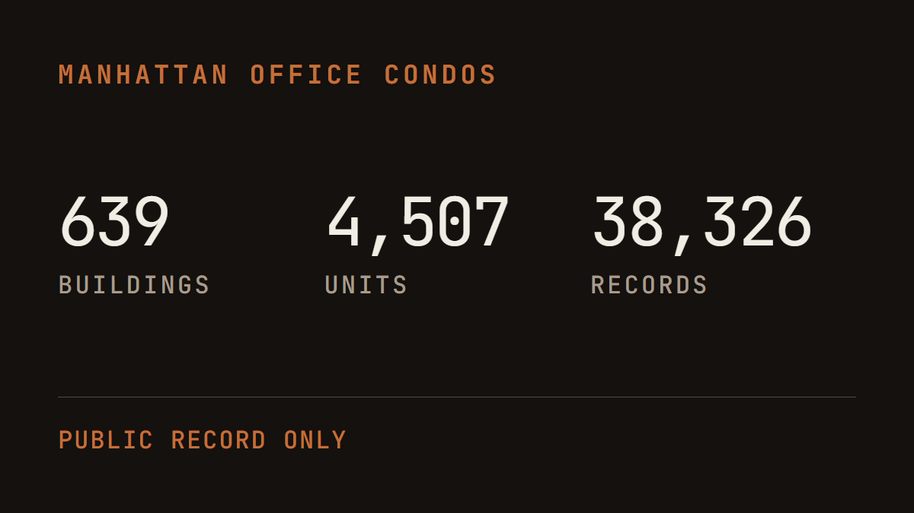

Every Manhattan office condo, from public record.

A Manhattan broker can now ask who owns 110 East 40th, what the units there last traded for, and who has been buying this year, and have the answer before the question is finished. Behind it sits the whole segment: 639 buildings, 4,507 units, 38,326 recorded documents reaching back to 1972.
All of that has always been public. It is spread across three separate New York City systems that were never built to be read together, which is why the market either pays a subscription for it or rebuilds it by hand every time somebody asks. We assembled it once, joined it, and made it answerable in ordinary English.
It installs as a single file. The records travel inside it, so there is no database to run, no server, and nothing to configure. The broker opens Claude and starts asking.